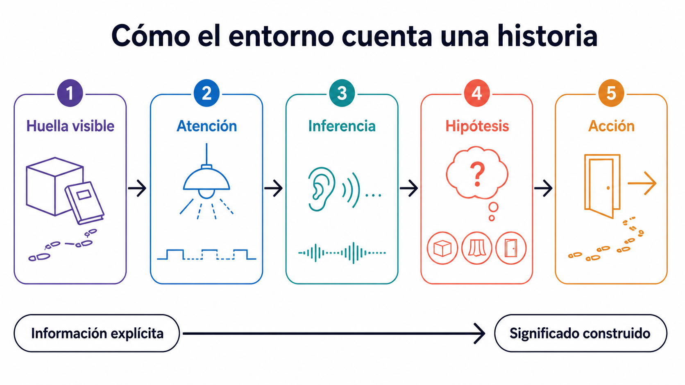
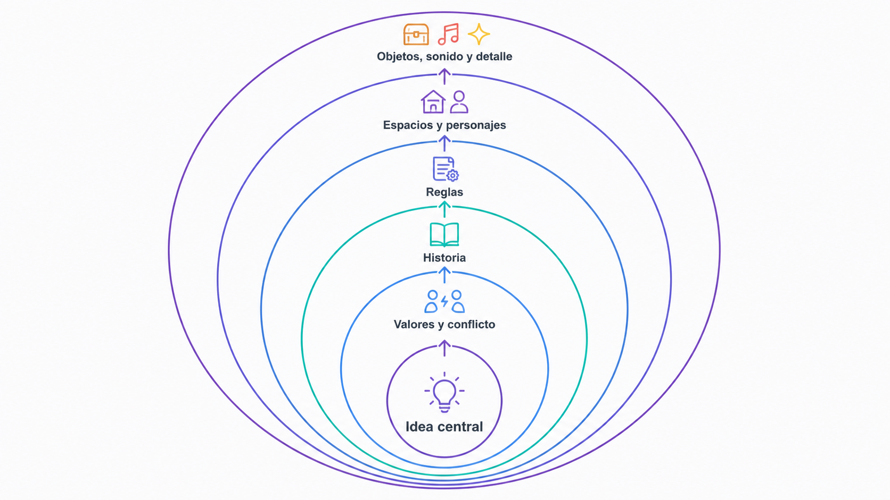
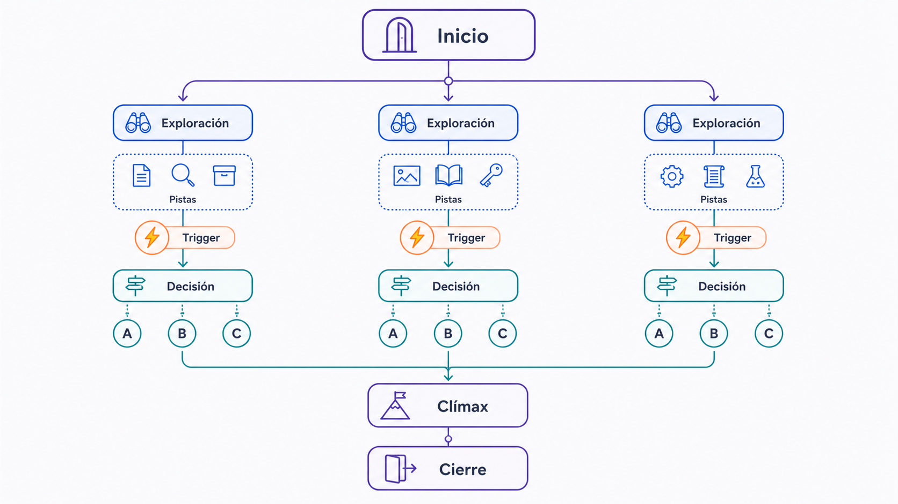

Narrativa, construcción de mundos y diseño de experiencia
Storytelling espacial y ambiental, construcción de mundos, narrativa no lineal y arco de la experiencia inmersiva.
Objetivos de aprendizaje
Diseñar narrativas que se experimenten desde el espacio y la acción.
Aplicar construcción de mundos como infraestructura cultural del proyecto.
Estructurar un arco de experiencia con triggers narrativos.
Conceptos clave
Spatial storytellingNarración mediante el entornoConstrucción de mundosNarrativa no linealUser journeyNarrative triggersArco de la experiencia
Introducción
Esta sexta clase aborda la narrativa en experiencias inmersivas desde una perspectiva espacial, ambiental e interactiva. En XR, instalaciones interactivas o videojuegos inmersivos, la narrativa no depende únicamente de diálogos, textos o cinemáticas: también se construye mediante el espacio, los objetos, la luz, el sonido, el recorrido, la escala, las huellas del mundo y las acciones del usuario. La sesión introduce spatial storytelling, narración mediante el entorno, construcción de mundos, narrativa no lineal, user journey, narrative triggers y arco de la experiencia, entendiendo la narrativa como estructura que organiza todo el proyecto.
Conceptos en detalle
Spatial storytelling
Narración construida mediante la organización del espacio. El espacio no es solo un contenedor donde ocurre la historia: es una forma de contar. Un pasillo estrecho que se abre en una sala enorme puede producir descubrimiento, vulnerabilidad o asombro sin necesidad de diálogo.
Recorridos y pasillos
Escala, altura y proximidad
Puertas, obstáculos y zonas abiertas o cerradas
Cambios de luz y de sonido
Puntos de atención
Objetos colocados estratégicamente
Narración mediante el entorno
Narrativa transmitida por los detalles del entorno: huellas, restos, objetos, marcas, texturas y señales que permiten al usuario reconstruir una historia. Una silla caída, una taza rota y una ventana abierta pueden sugerir que alguien huyó rápidamente.
Una mesa desordenada
Un objeto roto o fuera de lugar
Una pared quemada
Una grabación antigua
Una luz que parpadea
Una habitación abandonada
Un sonido lejano
Construcción de mundos
Construcción del mundo de la experiencia: reglas, cultura, materiales, tecnologías, memoria, estética, lenguaje y lógica interna. No todo lo que se diseña debe aparecer explícitamente en escena, pero todo lo que aparece debería parecer sostenido por un mundo más amplio.
¿Dónde ocurre la experiencia y qué reglas tiene?
¿Quién lo habita o lo habitó?
¿Qué materiales y tecnologías predominan?
¿Qué sonidos son propios de ese mundo?
¿Qué conflictos o tensiones existen?
¿Qué se muestra y qué permanece oculto?
Narrativa no lineal
Estructura narrativa en la que el usuario no recibe el relato en un orden fijo: explora fragmentos, activa eventos en distinta secuencia o reconstruye la historia a partir de pistas. Exige diseñar fragmentos comprensibles de forma parcial pero que aporten al conjunto.
Videojuegos de exploración
Instalaciones interactivas
Experiencias XR
Museografía inmersiva
Narrativas ambientales
Documentales interactivos
User journey
Recorrido del usuario a través de la experiencia. No se refiere solo al desplazamiento físico, sino también a su evolución perceptiva, emocional, cognitiva e interactiva. Ayuda a diseñar qué siente, entiende y hace el usuario en cada momento.
Entrada
Orientación y primer descubrimiento
Exploración
Acción principal
Conflicto o pregunta
Transformación
Cierre y salida
Narrative triggers
Eventos que activan fragmentos narrativos. Pueden depender de una acción del usuario, de su posición, del tiempo, de un objeto o del estado del sistema. En Unity se implementan con colliders, eventos, scripts, sistemas de interacción, UI o estados del prototipo.
Entrar en una zona
Coger o colocar un objeto
Mirar un punto concreto
Pulsar un botón
Escuchar una grabación
Activar una luz
Completar una secuencia
Arco de la experiencia
Estructura emocional y cognitiva de la vivencia. En lugar de pensar solo en historia, se piensa en cómo evoluciona la experiencia del usuario. Estructura básica: Introducción → Descubrimiento → Complicación → Clímax → Cierre. En XR el cierre es especialmente importante: el usuario debe entender cuándo termina y qué sentido tiene.
Introducción: el usuario comprende dónde está
Descubrimiento: algo despierta curiosidad
Complicación: aparece tensión, obstáculo o decisión
Clímax: la acción principal transforma la experiencia
Cierre: la experiencia termina o se transforma en una conclusión
La narrativa no siempre se cuenta con palabras
En experiencias inmersivas, la narrativa puede aparecer sin narrador, sin diálogos y sin texto explicativo. El usuario interpreta el mundo mediante señales espaciales, objetos, sonidos, acciones y atmósferas.
Una experiencia puede contar mediante qué objetos existen, dónde están colocados, qué se puede tocar, qué suena, qué está iluminado, qué está bloqueado, qué cambia al interactuar, qué se revela después de una acción, qué se oculta al principio y qué sensación produce el recorrido.
Diseñar narrativa en XR implica diseñar espacio, acción y percepción.
Spatial storytelling: el espacio como estructura narrativa
El spatial storytelling organiza la historia mediante el recorrido. El usuario no recibe la información de forma abstracta; la descubre al moverse.
Estrategias espaciales: contraste entre espacios pequeños y grandes, pasillos que generan tensión, salas abiertas que producen descanso, puertas cerradas que sugieren misterio, objetos al final de un recorrido, iluminación que guía la mirada, sonido que atrae al usuario, altura que produce vulnerabilidad o poder.
Ejemplo de secuencia espacial: el usuario empieza en una sala oscura, escucha un sonido lejano, ve una luz al fondo de un pasillo, avanza, encuentra un objeto abandonado y al cogerlo la sala cambia. Esta secuencia ya cuenta algo aunque no haya texto.
Narración mediante el entorno: huellas de un mundo
El narración mediante el entorno funciona como una arqueología de la experiencia. El usuario reconstruye lo ocurrido a partir de pistas: fotografías, documentos, objetos personales, herramientas, restos, sonidos, marcas, desgaste, ruinas, cambios de material, elementos repetidos o ausencias.
Pregunta clave: ¿qué puede deducir el usuario solo observando el espacio? Una buena narrativa ambiental no explica demasiado: sugiere lo suficiente para que el usuario participe en la construcción de sentido.

Figura 3.18 — Construcción de significado mediante narración mediante el entorno.
Construcción de mundos: diseñar más de lo que se muestra
El construcción de mundos es la base invisible del proyecto. Aunque el usuario solo vea una sala, esa sala debería parecer parte de un mundo más amplio.
Capa espacial: ¿dónde ocurre? ¿qué tipo de lugar es? ¿cómo se organiza? Capa cultural: ¿quién creó ese lugar? ¿qué símbolos, hábitos o valores existen? Capa material: ¿de qué está hecho el mundo (metal, piedra, cristal, vegetación, residuos, luz, datos)?
Capa tecnológica: ¿qué tecnología existe (avanzada, obsoleta, orgánica, invisible, artesanal)? Capa sonora: ¿cómo suena el mundo (silencio, ruido mecánico, voces, viento, pulsaciones)? Capa histórica: ¿qué ocurrió antes? ¿qué conflicto dejó huellas? ¿qué se ha perdido? ¿qué está a punto de ocurrir?

Figura 3.5 — Capas que sostienen un construcción de mundos coherente.
Narrativa no lineal: diseñar fragmentos coherentes
En una experiencia inmersiva, el usuario puede mirar en cualquier dirección, moverse en distinto orden o ignorar ciertos elementos. Por eso, una narrativa demasiado lineal puede romperse fácilmente.
Hay que diseñar fragmentos autónomos, pistas repetidas, redundancia significativa, espacios legibles, jerarquía de información, triggers independientes, estados de progreso y cierre comprensible.
Riesgo habitual: el diseñador imagina un recorrido ideal, pero el usuario explora en otro orden. Solución: una estructura flexible donde fragmento A se entiende solo, B añade contexto, C reinterpreta A y D permite cierre.
Narrative triggers: contar mediante acciones
Los triggers narrativos permiten que el relato se active por la acción del usuario. Tipos: trigger de posición (entrar en una zona activa una voz), de objeto (coger una pieza muestra un recuerdo), de colocación (colocar un objeto activa una proyección), de mirada (observar una imagen revela información), de tiempo (después de un minuto cambia el sonido), de secuencia (activar tres objetos desbloquea el cierre).
En Unity pueden implementarse mediante OnTriggerEnter, XR Grab Interactable, eventos de Select y Activate, botones de UI, colliders, scripts de estado, AudioSource, Timeline y animaciones.

Figura 3.6 — Mapa de narrativa espacial con elecciones y triggers.
Arco de experiencia: entrada, transformación y salida
En XR no basta con diseñar contenido: hay que diseñar la entrada y la salida de la experiencia.
Introducción: el usuario comprende dónde está y qué puede hacer (¿qué ve primero?, ¿qué información necesita?, ¿qué tono emocional se establece?). Descubrimiento: encuentra algo que despierta curiosidad. Complicación: aparece una tensión, obstáculo o decisión.
Clímax: la acción principal produce una transformación (¿qué evento importante se activa?, ¿qué siente el usuario?, ¿qué se revela?). Cierre: la experiencia termina o se transforma en una conclusión (¿cómo sabe el usuario que ha terminado?, ¿qué queda como reflexión?, ¿cómo sale de la experiencia?).
Tipologías
Spatial storytelling
En Unity se traduce en el diseño de la sala, los recorridos, la escala y la iluminación. La geometría y la organización espacial son la primera capa narrativa.
Layout de la escena (pasillos, salas, alturas)
Iluminación que guía la mirada
Escala y proporciones de la arquitectura
Ejemplo Lab 5: estructurar la sala del prototipo según un arco mínimo
Preguntas de análisis
¿El recorrido propuesto comunica algo por sí solo?
¿La luz dirige al usuario hacia el siguiente punto?
¿La escala cambia entre zonas para crear contraste emocional?
Narración mediante el entorno
En Unity se traduce en objetos, texturas, huellas y sonidos colocados en la escena para sugerir una historia sin texto.
Props con desgaste o roturas
Texturas y materiales que cuentan tiempo
Audio ambiental localizado
Ejemplo Lab 3: una pieza fuera de su soporte sugiere una secuencia previa
Preguntas de análisis
¿Qué puede deducir el usuario solo mirando los objetos?
¿Hay pistas que se repiten o se contradicen intencionadamente?
¿La escena sugiere más de lo que muestra?
Construcción de mundos
En Unity se traduce en estilo visual, reglas, materiales y símbolos coherentes a lo largo de toda la escena.
Paleta de materiales coherente
Reglas estéticas (iluminación, posprocesado)
Sistema de símbolos o señalética
Ejemplo Lab 5: que todo el prototipo parezca pertenecer al mismo mundo
Preguntas de análisis
¿Todos los elementos de la escena pertenecen al mismo mundo?
¿Las reglas del mundo se mantienen al interactuar?
¿Qué quedaría fuera de tono si lo añadiéramos?
Narrative trigger
En Unity se traduce en colliders, eventos, scripts e interacciones (XR Interaction Toolkit) que disparan fragmentos narrativos.
OnTriggerEnter al pisar una zona
Evento Select al coger un objeto
Evento Activate al colocar una pieza
Ejemplo Lab 3: colocar una esfera en un soporte activa audio y luz
Preguntas de análisis
¿Cada trigger tiene respuesta claro?
¿El usuario entiende qué acción disparó el cambio?
¿Los triggers funcionan si se activan en distinto orden?
User journey
En Unity se traduce en la secuencia de estados del prototipo: qué puede ver y hacer el usuario en cada momento.
¿Cada estado comunica claramente al usuario qué puede hacer?
¿Hay un camino mínimo que asegure la comprensión?
¿Las transiciones entre estados son legibles?
Arco de experiencia
En Unity se traduce en la estructura inicio, descubrimiento, clímax y cierre del prototipo, conectando triggers y estados con la evolución emocional.
Inicio con tono claro (luz, sonido)
Punto medio con descubrimiento o complicación
Clímax basado en una acción del usuario
Ejemplo Lab 5: cierre con cambio de iluminación + texto final
Preguntas de análisis
¿El usuario percibe progresión?
¿El clímax depende realmente de una acción suya?
¿El cierre es claro y le permite salir con sentido?
Referentes
Gone Home
Construye su narrativa principalmente mediante la exploración de una casa. El jugador reconstruye una historia a partir de objetos, habitaciones, notas, fotografías y detalles domésticos, sin acción espectacular ni personajes presentes en escena.
¿Qué cuenta la casa sin necesidad de personajes presentes?
¿Cómo se organiza la información?
¿Qué objetos funcionan como pistas?
¿El jugador descubre la historia o la recibe?
¿Cómo podría adaptarse esta lógica a una escena XR?
Outer Wilds
Propone un sistema narrativo basado en exploración, memoria y descubrimiento. El usuario puede visitar distintos lugares en diferente orden, pero cada fragmento añade comprensión sobre el mundo. El conocimiento es el progreso.
¿Cómo mantiene coherencia si el jugador explora en distinto orden?
¿Qué papel tiene la curiosidad?
¿Cómo se conectan los fragmentos narrativos?
¿Qué reglas del mundo sostienen la experiencia?
¿Qué puede aprender un proyecto XR de este enfoque?
Notes on Blindness VR
Usa la realidad virtual para traducir una experiencia subjetiva y sensorial. No se limita a mostrar un entorno: construye una percepción del mundo a través de sonido, memoria, voz y abstracción visual.
¿Cómo se cuenta una experiencia interior mediante espacio y sonido?
¿Qué papel tiene la voz?
¿Cómo se usa la abstracción visual?
¿Qué tipo de embodiment propone?
¿Qué riesgos éticos existen al representar una experiencia subjetiva?
Actividades
Ejercicio 1 — Concepto narrativo de una página
Actividad central · 23 min · Escritura conceptual
Redactar un concepto narrativo para una posible experiencia inmersiva personal. Preparatorio para el Design Dossier.
Título provisional
Lugar
Tono
Personajes, si los hay
Reglas del mundo
Materialidad
Sonido
Conflicto o tensión
Acción principal del usuario
Arco emocional
Final o cierre posible
¿Dónde ocurre la experiencia?
¿Qué siente el usuario al entrar?
¿Qué descubre?
¿Qué puede modificar?
¿Qué cambia al final?
¿Qué parte se contará con objetos y no con texto?
¿Qué parte podría prototiparse en Unity?
Ejercicio 2 — Mapa de construcción de mundos
Actividad central · 23 min · Diseño de mundo
Crear un mapa de construcción de mundos para un proyecto propio o imaginario, respondiendo a cada capa con frases breves o palabras clave.
Espacio: ¿dónde ocurre? ¿cómo se organiza?
Historia: ¿qué ocurrió antes?
Cultura: ¿qué símbolos, rituales o normas existen?
Materiales: ¿de qué está hecho el mundo?
Tecnología: ¿qué tecnología existe?
Sonido: ¿cómo suena?
Conflicto: ¿qué tensión sostiene la experiencia?
Usuario: ¿quién entra y qué papel tiene?
Actividades de ampliación opcional · fuera de la sesión
Ejercicio 3 — Fragmentos de narrativa no lineal
Ampliación opcional · 20 min · Escritura y estructura
Diseñar cuatro fragmentos narrativos que puedan descubrirse en distinto orden. Cada uno debe entenderse parcialmente por sí solo, pero ganar más sentido al combinarse con los demás.
Nombre del fragmento
Dónde aparece
Objeto o evento asociado
Información que revela
Pregunta que abre
Relación con los otros fragmentos
¿Qué pasa si el usuario ve este fragmento primero?
¿Qué pasa si lo ve al final?
¿Repite información importante?
¿Añade contexto?
¿Cambia la interpretación de otro fragmento?
Ejercicio 4 — Diseño de narrative triggers
Ampliación opcional · 20 min · Diseño aplicado
Diseñar tres triggers narrativos para una experiencia inmersiva. Para cada uno, definir acción del usuario, evento narrativo, respuesta e implementación posible en Unity.
Complicación: ¿qué obstáculo, pregunta o tensión aparece?
Clímax: ¿qué acción o revelación transforma la experiencia?
Cierre: ¿cómo sabe el usuario que la experiencia termina?
Salida: ¿qué se lleva como idea, emoción o pregunta?
¿El cierre es claro?
¿El usuario entiende su papel?
¿La experiencia tiene progresión?
¿El clímax depende de una acción del usuario?
¿La salida deja una reflexión?
Investigación aplicada
Ampliación opcional · fuera de la sesión
Identificar tres obras (videojuegos, instalaciones, experiencias XR, obras interactivas, proyectos museográficos, performances o documentales interactivos) que utilicen narrativa no lineal y completar una ficha comparativa para cada una.
¿La obra permite libertad real o solo aparente?
¿Qué mantiene unido el relato?
¿Qué ocurre si el usuario se salta un fragmento?
¿Hay repetición de información clave?
¿Qué tipo de triggers o eventos usa?
¿Cómo podría traducirse esa lógica a Unity?
Conexión con Unity
Convertir una idea narrativa en una estructura técnica simple para Unity, conectando arco de experiencia y triggers con elementos concretos de la escena.
Nombre del proyecto
Introducción: objeto o espacio inicial en Unity
Descubrimiento: qué elemento atrae al usuario
Trigger 1: qué acción lo activa y qué ocurre en Unity
Complicación: qué cambia en la escena
Trigger 2: qué acción lo activa y qué ocurre en Unity
Clímax: qué acción principal realiza el usuario
Trigger final: qué activa y qué respuesta aparece
Cierre: qué objeto, sonido, luz o UI indica que la experiencia ha terminado
Archivo de los ecos
Introducción: El usuario aparece en una sala oscura con tres objetos apagados.
Descubrimiento: Un objeto emite un sonido espacial.
Trigger 1: El usuario se acerca al objeto y se activa una voz.
Complicación: El usuario descubre que debe ordenar tres objetos.
Trigger 2: El usuario coloca el primer objeto en un soporte y se ilumina una pared.
Clímax: El usuario coloca los tres objetos correctamente.
Trigger final: Se activa una proyección sonora.
Cierre: La sala queda iluminada y aparece un texto final.
Reflexión
Glosario de la lección
Spatial storytelling
Narrativa construida mediante la organización del espacio, el recorrido, la escala, la luz y la disposición de elementos.
Narración mediante el entorno
Narrativa transmitida por objetos, huellas, materiales, texturas, sonidos y detalles del entorno.
Construcción de mundos
Construcción del mundo del proyecto: reglas, historia, cultura, materialidad, sonido, tecnología y lógica interna.
Narrativa no lineal
Narrativa que no se presenta en un orden fijo y permite al usuario reconstruir el relato mediante exploración.
User journey
Recorrido físico, emocional, cognitivo e interactivo del usuario a través de la experiencia.
Narrative trigger
Evento que activa un fragmento narrativo mediante una acción, posición, mirada, tiempo o estado del sistema.
Arco de la experiencia
Estructura emocional y cognitiva de la experiencia: introducción, descubrimiento, complicación, clímax y cierre.
Design Dossier
Documento de diseño que articula concepto, referentes, experiencia, narrativa, interacción, arquitectura técnica y decisiones del proyecto.
Finalización de la sesión
Confirma cuando hayas completado la actividad central
La visita a la página se registra como progreso de lectura. Esta confirmación registra la sesión como completada.